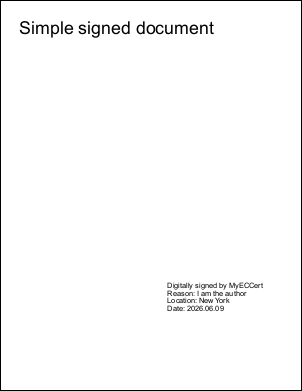

|
The example below shows how to use a CustomSigner2 callback to sign a PDF document. It handles both RSA and Elliptic Curve Cryptography (ECC) certificates.
RSA security relies on factoring large primes, requiring keys of 2048 or 3072 bits. This makes operations slower and ciphertexts larger. It has a long track record and near-universal support across libraries and hardware.
ECC bases security on elliptic curve discrete logs, which is harder per bit, enabling equivalent strength with far smaller keys (a 256-bit ECC key matches 3072-bit RSA). This yields faster computation, smaller certificates, and lower bandwidth.
eIDAS (Electronic Identification, Authentication and Trust Services) is the EU regulation that establishes a legal framework for secure electronic transactions, including digital signatures, seals, and time stamps. Under eIDAS requirements, RSA keys smaller than 3,000 bits are now classified as legacy which means that the legal basis for their use is no longer solid.
This makes ECC a compelling alternative as it provides the same security strength as a much larger RSA key with a smaller key size, leading to faster computations and lower resource use. As a result ECC offers a more future-proof and efficient solution for digital signatures, especially when contrasted with the large keys needed for RSA.
[C#]
var cert = X509CertificateLoader.LoadPkcs12FromFile("../Rez/JohnSmithEC.pfx", "1234");
var hashAlgo = HashAlgorithmName.SHA256;
using var doc = new Doc();
doc.Font = doc.AddFont("Helvetica");
doc.FontSize = 36;
// create interactive form
XForm form = doc.Form;
doc.Pos.X = 40;
doc.Pos.Y = doc.MediaBox.Top - 40;
doc.AddText("Simple signed document");
// add signature
Signature sig = form.AddSignature(new XRect("340 160 540 220"), "Signature");
sig.Reason = "I am the author";
sig.Location = "New York";
sig.CompliancePades = Signature.PadesLevel.PAdES_B_T;
if (cert.GetECDsaPrivateKey() != null)
sig.MaxSignatureLength = 8000;
sig.CustomSigner2 = new Signature.SigningDelegate2((data, state) => {
using var rsa = cert.GetRSAPrivateKey();
if (rsa != null)
return rsa.SignData(data, hashAlgo, RSASignaturePadding.Pkcs1);
using var ecdsa = cert.GetECDsaPrivateKey();
if (ecdsa != null)
return ecdsa.SignData(data, 0, data.Length, hashAlgo, DSASignatureFormat.Rfc3279DerSequence);
throw new Exception("Unknown key type.");
});
sig.TimestampServiceUrl = new Uri("http://timestamp.digicert.com");
sig.Sign(cert, true, new Oid(CryptoConfig.MapNameToOID(hashAlgo.Name)), X509IncludeOption.EndCertOnly);
// make signature appearance
var op = new VirtualPageOperation(doc, sig.Rect.Width, sig.Rect.Height);
doc.FitText($"Digitally signed by {sig.Signer}\nReason: {sig.Reason}\nLocation: {sig.Location}\nDate: {sig.SigningUtcTime:yyyy.MM.dd}");
sig.GetAnnotations()[0].NormalAppearance = op.GetFormXObject();
doc.Save("SignUsingCustomSigner2.pdf");
[C#]
static class SignatureHelper {
// A function to generate an Eliptic Curve based PFX certificate for test purposes.
public static void MakeEcPfx(string path, string password) {
using var ecdsa = ECDsa.Create(ECCurve.NamedCurves.nistP256);
var certRequest = new CertificateRequest("CN=MyECCert", ecdsa, HashAlgorithmName.SHA256);
using var certificate = certRequest.CreateSelfSigned(DateTimeOffset.Now, DateTimeOffset.Now.AddYears(99));
byte[] pfxData = certificate.Export(X509ContentType.Pkcs12, password);
File.WriteAllBytes(path, pfxData);
}
// Some basic sanity checks for this example.
public static void CheckSignature(string path, string signature) {
using var doc = new Doc();
doc.Read(path);
Signature sig = (Signature)doc.Form["Signature"];
sig.ValidationPolicy = Signature.ValidationPolicyType.EntireChainTrust;
sig.Validate();
if (sig.IsModified)
throw new CryptographicException("Signature reports as modified.");
if (!sig.IsTimeValid)
throw new CryptographicException("Signature reports as not time valid.");
if (sig.IsTrusted) //we made these - they are not trusted
throw new CryptographicException("Signature reports as trusted. This is unexpected as the PFX is one we read from file.");
}
}

SignUsingCustomSigner2.pdf
|
|
|